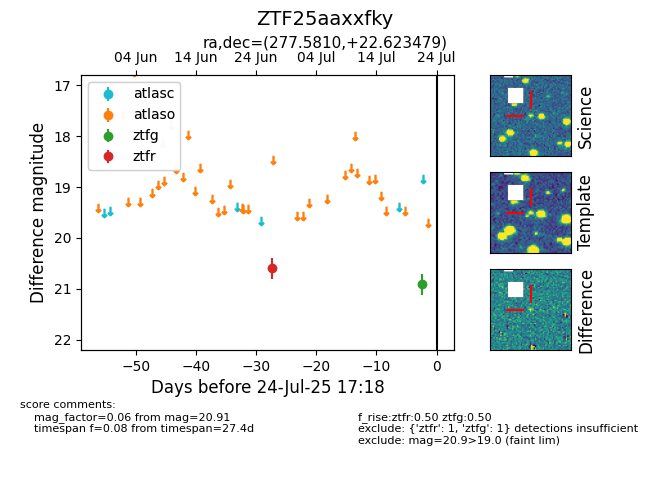

Target ZTF25aaxxfky at 2025-07-24 17:18, see:
FINK: fink-portal.org/ZTF25aaxxfky
Lasair: lasair-ztf.lsst.ac.uk/objects/ZTF25aaxxfky
ALeRCE: alerce.online/object/ZTF25aaxxfky
alt names
ZTF25aaxxfky (ztf,fink)
coordinates:
equatorial (ra, dec) = (277.5810,+22.62348)
galactic (l, b) = (51.2127,+14.53557)
photometry
last ztfg=20.91, ztfr=20.60
1 ztfg, 1 ztfr detections
